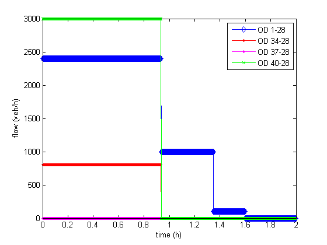
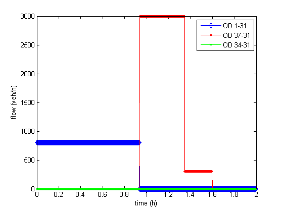
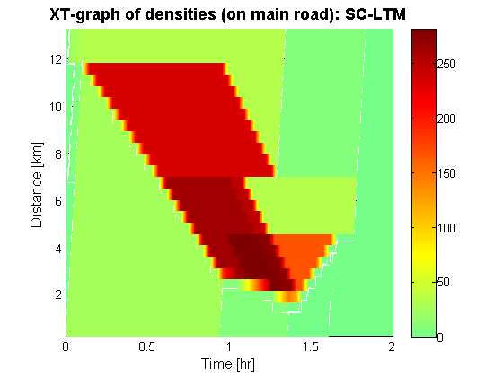
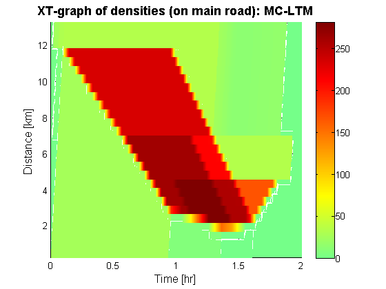
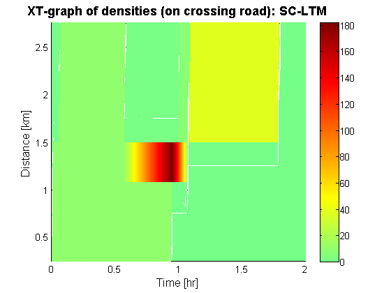
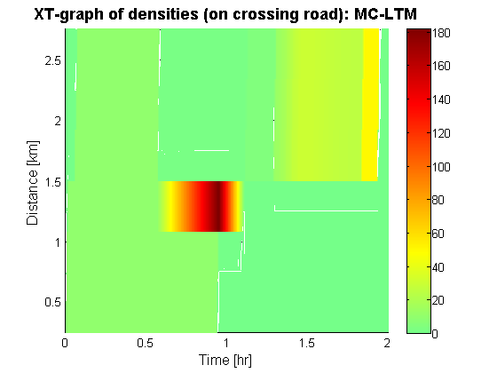

Tutorial 5: Comparing single commodity (SC) & multi commodity (MC)
Contents
- Disclaimer
- Introduction
- Loading the data
- Setup the simulation
- Visualize the demand in the network
- initilize the global turning fractions
- initilize the Destination Based Split rates
- Compute the single-commodity Dynamic Network Loading
- Compute a multi-commodity Dynamic Network Loading
- Visualize the resulting densities using XT diagrams
- Compute the maximum difference between both solutions
- Closing notes
Disclaimer
This file is part of the matlab package for dynamic traffic assignments developed by the KULeuven.
Copyright (C) 2016 Himpe Willem, Leuven, Belgium
This program is free software: you can redistribute it and/or modify it under the terms of the GNU General Public License as published by the Free Software Foundation, either version 3 of the License, or any later version.
This program is distributed in the hope that it will be useful, but WITHOUT ANY WARRANTY; without even the implied warranty of MERCHANTABILITY or FITNESS FOR A PARTICULAR PURPOSE. See the GNU General Public License for more details.
You should have received a copy of the GNU General Public License along with this program. If not, see http://www.gnu.org/licenses/.
More information at: http://www.mech.kuleuven.be/en/cib/traffic/downloads or contact: willem.himpe {@} kuleuven.be
Introduction
This tutorial compares a single commodity (SC) dynamic network loading with a multi commodity (MC) dynamic network loading. In both cases the link transmission model is used to propagate the traffic over the network. In a SC dynamic network loading exogenously defined turning rates are defined to guide the traffic (that is modelled as a single stream) from origins to destinations. The turning rates have to be set such that the demand is distributed consistenly from each origin towards each destination.This requires taking into account delays in the network. If this is not modelled accurately some flows might reach a wrong destination. In a MC dynamic network loading this problem is solved by explicitly modelling route specific flows or destination bound flows. However this requires storing more information in memory.
%add these folders to the search path addpath('Dynamic Traffic Assignment','Visualization Tools','Network Data') %clear the work space clear %clear the command window clc %close all windows close all display('<<<Comparing single commodity (SC) & multi commodity (MC)>>>')
<<<Comparing single commodity (SC) & multi commodity (MC)>>>
Loading the data
The network represents a two-lane road with vehicles moving from right to left. There are two on-ramps feeding additional traffic into the system and one crossing road (moving from below to the top). The demand pattern is chosen such that the most downstream merge forms a temporary bottleneck and congestion spills back over the node.
% Network and demand data load net4.mat % Plot the network plotNetwork(nodes,links,true,[]);

Setup the simulation
Before the simulation can be run the time interval has to be set and the total number of time steps has to be defined. These are used to transform the different origin-destination (OD-) matrices into a 3D-matrix. The time interval is bound by CFL-conditions. It can not be larger then the minimal travel time of the fastest kinematic wave in the network.
%setup the time interval and total number of time steps dt = min(links.length./links.freeSpeed); totT = round(2/dt); %build the full ODmatrix [ODmatrix,origins,destinations] = buildODmatrix(ODmatrices,timeSeries,dt,totT);
Visualize the demand in the network
The demand between every origin-destination combination is plotted for each time interval of the simulation.
figure; plot(dt*[0:totT-1],reshape(ODmatrix(1,1,:),1,[]),'d-b',dt*[0:totT-1],reshape(ODmatrix(2,1,:),1,[]),'.-r',dt*[0:totT-1],reshape(ODmatrix(3,1,:),1,[]),'.-m',dt*[0:totT-1],reshape(ODmatrix(4,1,:),1,[]),'x-g') legend('OD 1-28','OD 34-28','OD 37-28','OD 40-28') xlabel('time (h)') ylabel('flow (veh/h)') figure; plot(dt*[0:totT-1],reshape(ODmatrix(1,2,:),1,[]),'d-b',dt*[0:totT-1],reshape(ODmatrix(3,2,:),1,[]),'.-r',dt*[0:totT-1],reshape(ODmatrix(2,2,:),1,[]),'x-g') legend('OD 1-31','OD 37-31','OD 34-31') xlabel('time (h)') ylabel('flow (veh/h)') 
initilize the global turning fractions
The global turning fractions for a single commodity network loading have to be defined for each time interval. The demand pattern describes that 25% of traffic on the main road makes a right turn at the intersection during the first half of the simulation while 75% of traffic on the main road makes this turn during the second half of the simulation. However because of delays on the main road the actual change in split will not take place half way the simulation but later. A consistent solution can only be found by iterating the dynamic network loading and the computation of the splitting rates taking into account the delays of the last loading. A fraction (25%) of the vehicles on the main road make a right turn at the crossing road. The turning fractions have to be defined for each time interval. They are stored in a cell array where each cell represents the turns in matrix with size [#incoming links, #outgoing links].
TF = num2cell(ones(size(nodes.id,1),totT)); for t=1:totT/2 TF{10,t} = ones(2,1); TF{25,t} = ones(2,1); TF{15,t} = [0.75 0.25; 1 0 ]; end %To account for change in OD flow (departed at time = 0.9375 and arriving in free flow at totT/2 at the diverge) for t=totT/2:totT TF{10,t} = ones(2,1); TF{25,t} = ones(2,1); TF{15,t} = [0.25 0.75; 1 0 ]; end clear t;
initilize the Destination Based Split rates
During a multi commodity network loading path based flows or destination based flows are tracked explicitly (as cumulative vehicle numbers in the link transmission model). The turing rates at a diverge are thus computed at run time and consistent with the demand pattern without iterations. Because there is no route choice in this network all destination based turning fractions are either zero or one.
TF_d = num2cell(ones(size(nodes.id,1),totT,length(destinations))); for t=1:totT d=1; TF_d{10,t,d} = ones(2,1); TF_d{25,t,d} = ones(2,1); TF_d{15,t,d} = [1 0; 1 0 ]; d=2; TF_d{10,t,d} = ones(2,1); TF_d{25,t,d} = ones(2,1); TF_d{15,t,d} = [0 1; 0 1 ]; end clear t;
Compute the single-commodity Dynamic Network Loading
First the single-commodity link transmission model is used to propagate the traffic over the network. No iterations are performed to take into account delays for setting consistent splitting rates.
display('Running LTM single-commodity') %run LTM tic [cvn_up,cvn_down] = LTM_SC(nodes,links,origins,destinations,ODmatrix,dt,totT,TF); toc
Running LTM single-commodity Elapsed time is 4.658685 seconds.
Compute a multi-commodity Dynamic Network Loading
Now the multi-commodity link transmission model is used to propagate the traffic over the network. Computation times are higher because of the additional bookkeeping of the destination based cumulative vehicle numbers.
display('Running LTM multi-commodity') %run LTM tic [cvn_up_d,cvn_down_d] = LTM_MC(nodes,links,origins,destinations,ODmatrix,dt,totT,TF_d); toc
Running LTM multi-commodity Elapsed time is 6.098091 seconds.
Visualize the resulting densities using XT diagrams
Resulting densities and flows are depicted for both approaches in space-time (or XT) diagrams of both the main road and the crossing road. Note that this requires summing over all destination based cumulative vehicle numbers for the multi-commodity approach.
%compute the simulated densities & flows [simDensity] = cvn2dens(cvn_up,cvn_down,totT,links); [simFlows_down] = cvn2flows(cvn_down,dt); %compute the simulated densities & flows for the destination based [simDensity_d] = cvn2dens(sum(cvn_up_d,3),sum(cvn_down_d,3),totT,links); [simFlows_down_d] = cvn2flows(sum(cvn_down_d,3),dt); %Main road plotXT(links,1:27,simDensity,dt,totT); title('XT-graph of densities (on main road): SC-LTM','FontSize',14,'fontweight','b') plotXT(links,1:27,simDensity_d,dt,totT); title('XT-graph of densities (on main road): MC-LTM','FontSize',14,'fontweight','b') %Crossing road plotXT(links,[33:-1:31,28:30],simDensity,dt,totT); title('XT-graph of densities (on crossing road): SC-LTM','FontSize',14,'fontweight','b') plotXT(links,[33:-1:31,28:30],simDensity_d,dt,totT); title('XT-graph of densities (on crossing road): MC-LTM','FontSize',14,'fontweight','b')   
Compute the maximum difference between both solutions
The following lines of code compare the output of both models in terms of difference in density and amount of vehicles that end up at the wrong destinations.
fprintf(1,'\n'); display('Comparing SC & MC') display(['- maximum difference: ',num2str(max(max(abs(simDensity-simDensity_d)))),' veh/km']); display(['- average difference: ',num2str(sum(sum(abs(simDensity-simDensity_d)))/sum(sum(simDensity))),' veh/km']); display(['- vehicles departed for D=31: ',num2str(sum(sum(ODmatrix(:,2,:)*dt)))]); display(['- vehicles arrived in SC simulation at D=31: ',num2str(cvn_down(30,end))]); display(['- vehicles arrived in MC simulation at D=31: ',num2str(sum(cvn_down_d(30,end,:)))]);
Comparing SC & MC - maximum difference: 254.6575 veh/km - average difference: 0.1559 veh/km - vehicles departed for D=31: 2062.5 - vehicles arrived in SC simulation at D=31: 2622.7381 - vehicles arrived in MC simulation at D=31: 2062.5
Closing notes
- In the MC assingment all traffic ends up at the corresponding destinations. However there is a smoothed response where a crisp change is expected. This is a result of the computation of the split rates which is based on the sending flow. An exact scheme is defined by split rates based on the actual transfered flow (found through iterations or incremental loading).